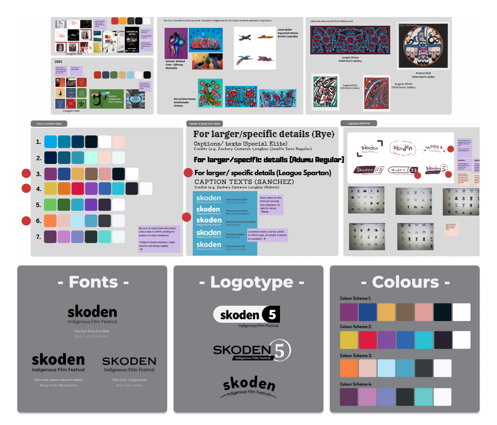

Social Media Branding
Project information
- Project date: Spring 2023
- Team: 4 People
- Role: Lead Visual Designer, Design Team Organizer
Navigation
About
The Skoden Indigenous Film Festival (SIFF) is a Vancouver-based event organized through Simon Fraser University. It is dedicated to showcasing Canadian Indigenous creators, celebrating their voices, and fostering active discussion about reconciliation.
Each year, SIFF likes to revamp their festival’s brand. So, in the festival’s marketing committee I played a key role working with and leading three other people to redesign the branding aesthetic from scratch and craft compelling social media posts to elevate the festival’s online presence on Instagram, Facebook, and Twitter.
My Role
As the lead designer for SIFF 2023, I spearheaded group meetings to establish the new logotype, colour schemes, and our overarching social media template. Taking a hands-on approach, I crafted numerous posts myself and actively provided feedback and assistance to teammates, ensuring visual cohesion across all designs.
Ideation
Initiating the project, we utilized concept boards on Canva to explore previous SIFF layout designs and discuss Indigenous BC artists to get visual inspirtation from. Likewise, we considered potential fonts, logotypes, and colour schemes.
I ensured that all voices were heard in the group while providing guidance on hierarchy and design principles. After narrowing down our options I presented potential concepts to the full SIFF team.
Design Document
Building on the feedback from the previous week’s ideation, we embraced the casual and friendly aesthetic of our sans-serif concept and opted for an orange to green gradient as our primary colour scheme. Additionally, our instructors told us we should use four different colour schemes depending on the type of post we created. While initially daunting, I proposed limiting the overall colours, resulting in all four schemes blending together to form a rainbow effect.

An unexpected benefit of this choice emerged when Squamish Nation Elder, Xwechtaal Dennis Joseph, noted that the use of the four-colour schemes reminded him of the Four Directions on The Medicine Wheel, used by various Indigenous groups.
Responding to critique from the SFU staff social media team, I also refined our logotype’s font for a distinct look. Due to software constraints between group members, I exported different layers as PNG files for collaboration in Canva, creating a template guide for consistency.

Social Media Posts
We created our posts in mind to be quickly digestible while not diluting information about how colonialism affects Canada. In a usual post I would receive the full text or rough notes of what should be told. Then I found the images for the post and began constructing visuals following our design document.
Throughout the semester, our instructors had the final say to ensure that information was correctly presented and not misconstrued.


Reflection
A significant challenge revolved around the persistent time constraints faced. Organizing film festivals of this scale typically spans the year, so our semester-long timeline intensified the workload.
This resulted in a bit of disorganization within the marketing team between the people who wrote the posts and those who designed them. To mitigate the stress caused by these time crunches, I was a major contributor in organizing group schedules and enhancing communication within SIFF the team.
Overall, this project has given me further confidence when it comes to working within strict deadlines in a leadership role.


{kind=link}
{kind=link}